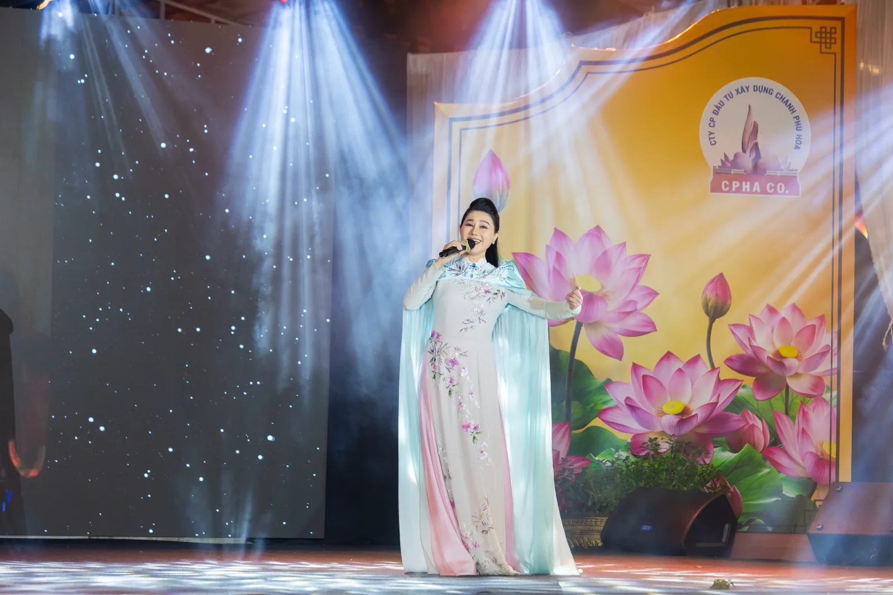
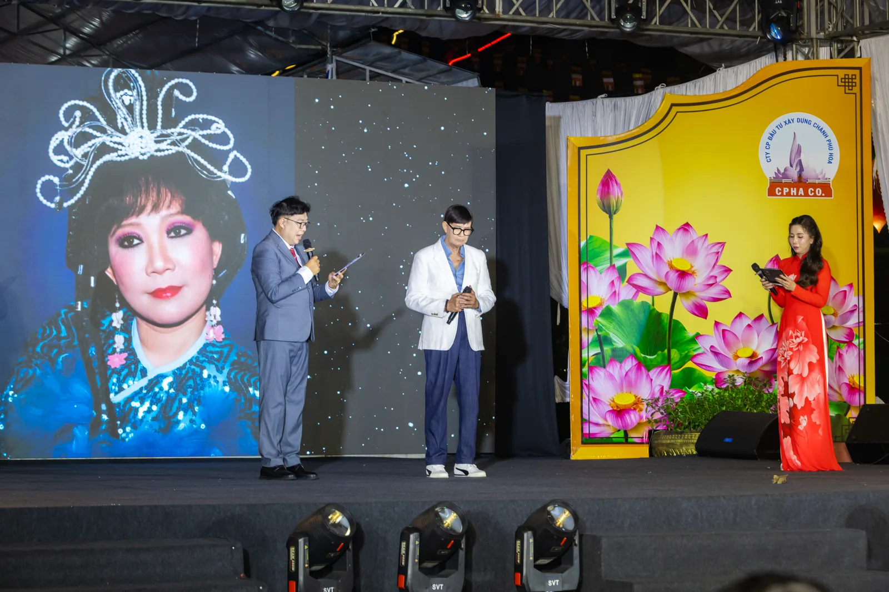

Đêm Diễn Tri Ân Khán Giả của
Nghệ Sĩ Nhân Dân
Kim Cương
Không phải một đêm vinh danh.
Không phải lời chia tay sân khấu.
Mà là một cuộc hội ngộ của nghĩa tình.
Khi ánh đèn tắt,
nghĩa tình vẫn sáng
Ở tuổi gần 90, NSND Kim Cương không trở lại sân khấu để tìm thêm vinh quang. Bà trở lại để thực hiện một điều đơn giản nhất trong cuộc đời người nghệ sĩ, nói lời cảm ơn.
Suốt hơn 70 năm hoạt động nghệ thuật, "Kỳ nữ Kim Cương" đã để lại trong lòng nhiều thế hệ khán giả những hình ảnh không thể phai: vai cô Diệu trong Lá Sầu Riêng, dàn dựng không biết bao nhiêu đêm diễn khiến khán giả Nam Bộ lặn lội từ quê lên thành phố chỉ để được xem một lần.
"Thời gian lặng lẽ trôi qua. Ánh đèn vẫn sáng, khán giả vẫn còn đó, chỉ có người nghệ sĩ dần bước sang bên kia sườn dốc của cuộc đời. Vì vậy, khi vẫn còn đủ sức cất lời, tôi muốn dành một đêm để nói tiếng cảm ơn với những người đã đồng hành cùng mình trong suốt một đời nghệ thuật."
NSND Kim Cương, trước đêm diễn 22/8Đêm diễn tối 22/8/2026 tại Hoa Viên Bình Dương mang thêm một lớp ý nghĩa đặc biệt khi diễn ra đúng mùa Vu Lan Báo Hiếu: không chỉ tri ân những khán giả đang hiện diện, mà còn hướng về những nghệ sĩ tài hoa đã đi xa, những người đã để lại một phần cuộc đời mình trong ký ức sân khấu Việt.
Chương trình do Công ty CP Đầu tư Xây dựng Chánh Phú Hòa (Hoa Viên Bình Dương) tổ chức, mở cửa miễn phí phục vụ công chúng. Tổng đạo diễn TS-MC Lê Hữu Luân chia sẻ: đây không đơn thuần là một chương trình nghệ thuật, mà là một nhân duyên đặc biệt.
"Một đêm diễn có thể bị giới hạn bởi thời gian, nhưng lòng biết ơn thì không có điểm kết thúc. Khi tiếng hát dừng, lời tri ân vẫn còn ngân vọng giữa đôi bờ âm và dương."
TS-MC Lê Hữu Luân, Tổng Đạo DiễnMột đêm, vạn tấm lòng
Một lời cảm ơn sau hơn bảy mươi năm
NSND Kim Cương trở lại sân khấu không để nhận thêm danh hiệu, mà để cúi đầu trước những khán giả đã làm nên cuộc đời bà.
Tri ân cả hai bờ âm dương
Đúng mùa Vu Lan, đêm diễn hướng về những khán giả đang hiện diện và tưởng nhớ các nghệ sĩ tài hoa đã đi xa như NSƯT Vũ Linh, nhạc sĩ Nguyễn Văn Tý, GS Trần Văn Khê.
Trọn vẹn các thể loại sân khấu Nam Bộ
Một chương trình miễn phí kéo dài ba giờ, từ cải lương Tây Thi, Người tình trên chiến trận đến kịch nói Lá Sầu Riêng.
Nơi nhiều thế hệ nghệ sĩ hội tụ
NSND Thanh Tuấn, NSND Minh Vương, NSND Quế Trân, NSƯT Phượng Hằng, danh hài Bảo Chung, Dũng Nhí cùng nhiều nghệ sĩ thế hệ sau.
Hoa Viên Bình Dương, nơi của nghĩa tình
Duyên giữa Hoa Viên Bình Dương và NSND Kim Cương bắt đầu từ sự đồng hành cùng các nghệ sĩ lớn tuổi, đau yếu.
Những tên tuổi của sân khấu Việt
Tối 22.8.2026 · Hoa Viên Bình Dương
Tưởng nhớ những nghệ sĩ đã đi xa
NSƯT Vũ Linh, nhà văn Sơn Nam, đạo diễn Huỳnh Phúc Điền, NSƯT Diên Châu, nhạc sĩ Nguyễn Văn Tý, GS Trần Văn Khê, nghệ sĩ Giang Châu…
Những khoảnh khắc đáng nhớ
Ảnh: Ban Tổ Chức · Đêm diễn tối 22/8/2026 tại Hoa Viên Bình Dương
Trích đoạn Lá Sầu Riêng
Vai diễn để đời của NSND Kim Cương trở lại trên sân khấu.
Tình yêu và cát bụi
NSND Minh Vương.
Trích đoạn Nhụy Kiều Tướng Quân
Khí phách nữ tướng trên sân khấu cải lương.

NSND Quế Trân
Nghệ sĩ khách mời góp giọng trong đêm diễn.
Trích đoạn Đêm lạnh chùa hoang
Khoảnh khắc bi tráng dưới ánh trăng.
Người lính già vui vẻ
NSND Thanh Nam.
Cung đàn mới
NSND Thanh Tuấn · NSƯT Phượng Hằng.

Trích đoạn Mồ Em
NSND Thanh Điền.
Bạch Thu Hà
Nghệ sĩ Mai Hằng.
Mình ơi
Nghệ sĩ Bích Trâm.
Tình ấm chiều quê
Nghệ sĩ Tuấn Thanh.
· Chạm vào ảnh để xem cỡ lớn ·
Xem thêm ảnh trên FacebookTừ những trang báo đến sân khấu tối 22/8
Những khoảnh khắc được ghi lại
Thêm video sẽ được cập nhật trên kênh YouTube của Hoa Viên Bình Dương.
Để không bỏ lỡ những chương trình nghệ thuật tiếp theo
Theo dõi Hoa Viên Bình Dương để nhận tin sớm về các chương trình nghệ thuật, văn hóa và hoạt động ý nghĩa tiếp theo.
Hoa Viên Bình Dương, Khu phố Bông Trang, Phường Chánh Phú Hòa, TP. Hồ Chí Minh